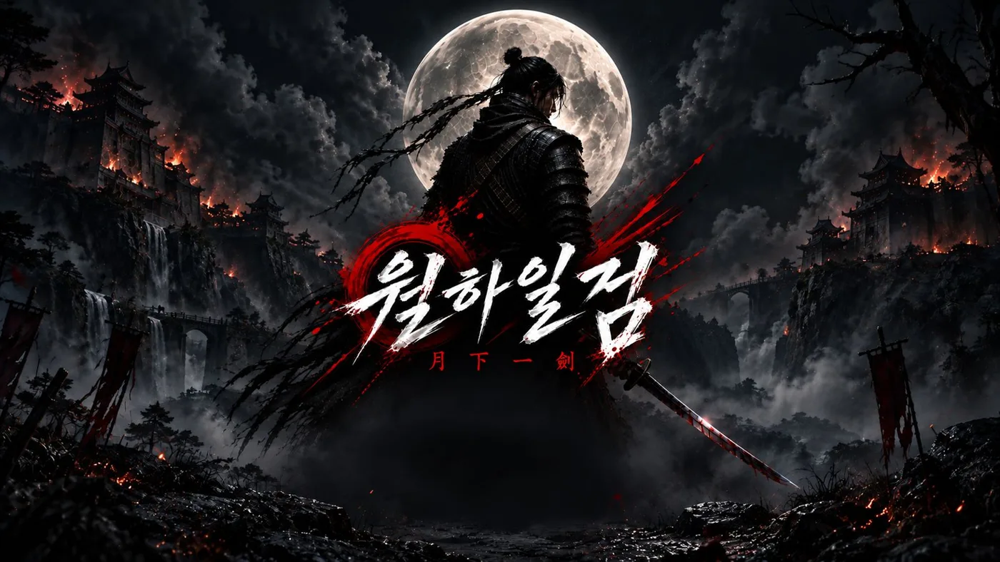
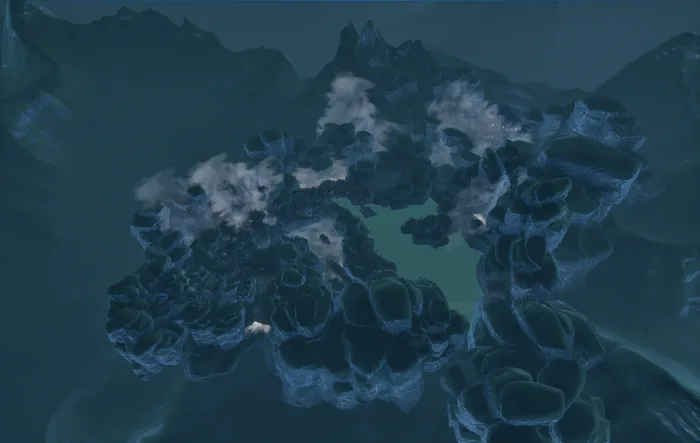
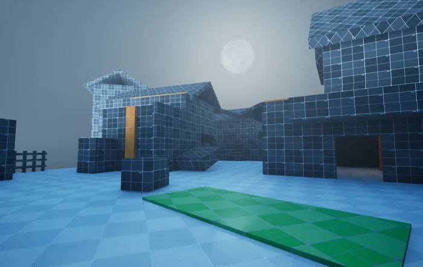
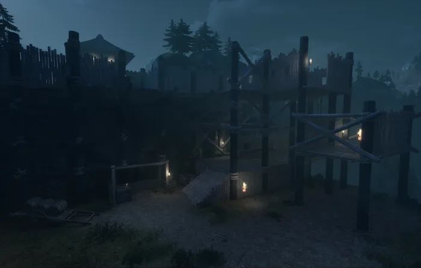

월하일검
싸울지 피할지, 매 순간 플레이어가 고르는 검술 액션 게임입니다.
1챕터 레벨을 지형과 객체 배치부터 라이트·포스트프로세스까지 엔진에서 직접 만들고, 몬스터 배치와 시야를 설계했습니다. 후반부에는 수레 동행 잠입 구간을 설계했고, UI는 HUD · 팝업 · 메인 메뉴 · 설정창을 기획부터 위젯 구현까지 맡았습니다.
- 담당 범위
- 레벨 기획 · UI 제작 · 그래픽 세팅
- 엔진 · 개발 기간
- Unreal Engine 5 · 2026.03 ~ 2026.11
- 전시
- G-Star 2026 전시

01조감도

02블록아웃

03완성
적이 몰리는 구간에서 막힘
조작감과 난이도 수치는 값을 바꿀 때마다 플레이로 확인해야 해서, 어디서 왜 막히는지 찾는 데 시간이 오래 걸렸습니다.
AI 플레이 시뮬레이션으로 원인 확인
여러 수치를 한 번에 관리하는 툴을 AI로 만들고, 숙련도 1~5단계 플레이어의 AI 플레이 시뮬레이션을 반복해 숙련도가 낮은 플레이어가 여러 적이 몰리는 구간에서 막힌다는 것을 찾았습니다.
1대1 교전이 이어지게
적의 시야와 거리를 조절해 1대1 교전이 이어지게 바꿨고, 적절하다고 판단한 값만 게임에 적용해 실제 플레이로 확인했습니다.